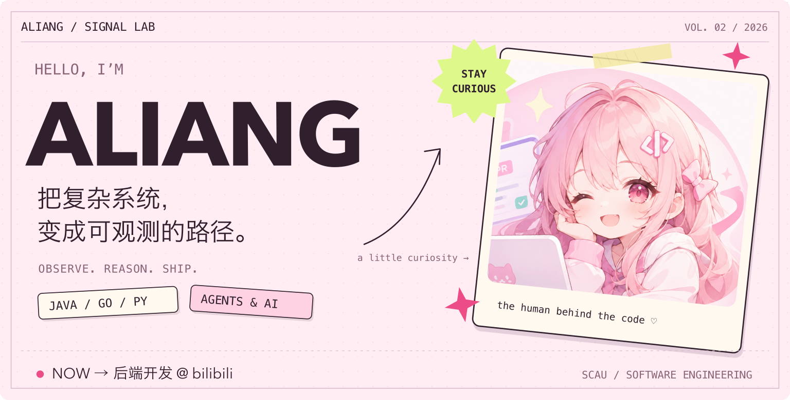
把复杂系统，变成可观测的路径。
我是阿亮，华南农业大学软件工程专业的学生。
主线是后端开发，也在探索 Agent 怎样真正连接工具、知识与业务；同时保留 HTML、CSS、JavaScript、Vue 的前端实践。
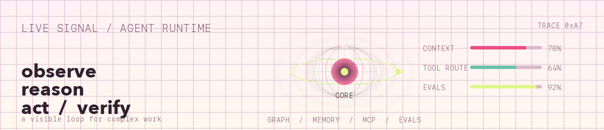
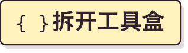 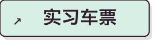 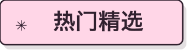
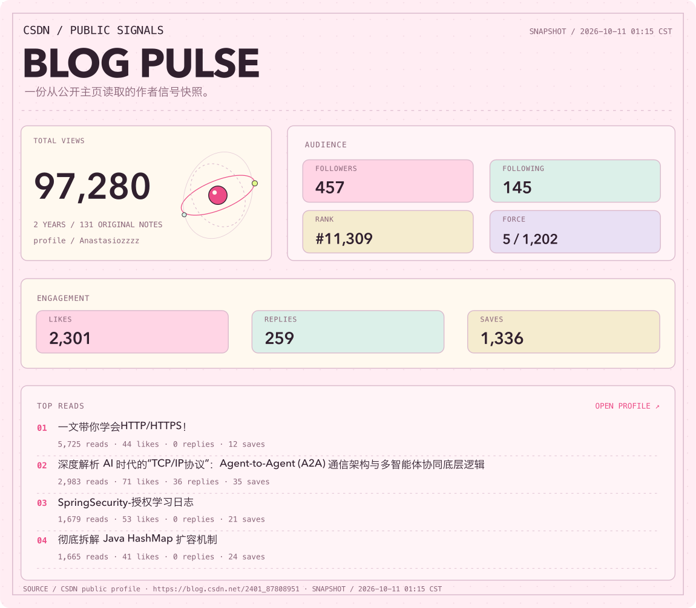
打开 CSDN 主页 ↗ / 数据来自 CSDN 公开主页快照
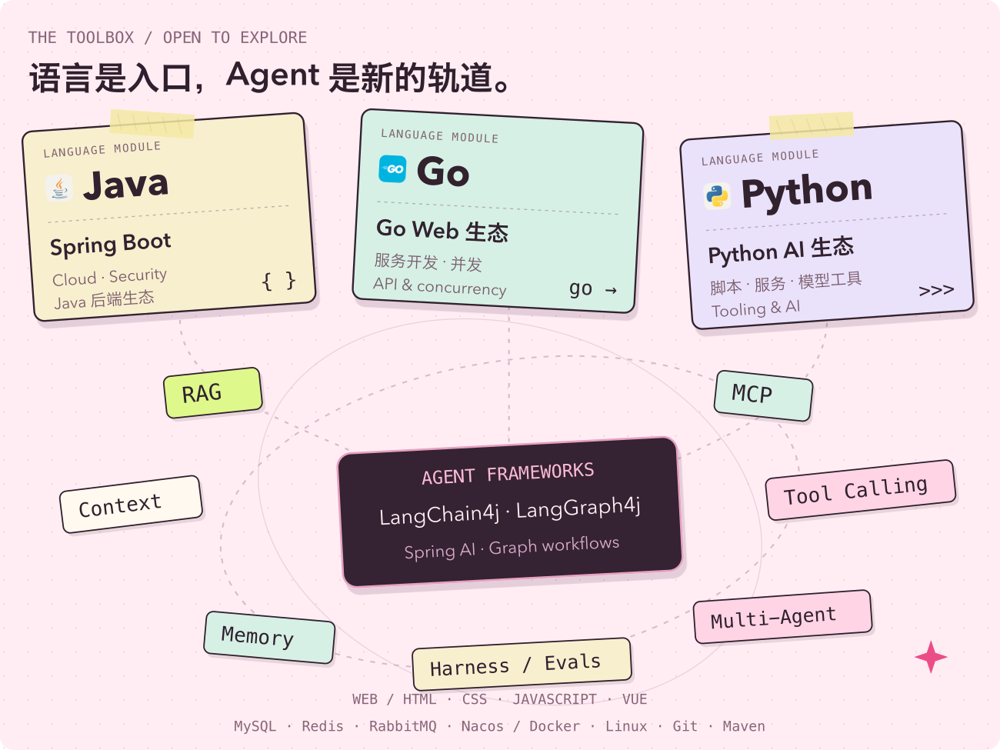
想看具体技术？打开这个抽屉。
Java：Spring · Spring Boot · Spring Cloud · Spring Security。
Go：服务开发、Web API 与并发。
Python：脚本、服务与 AI 应用工具。
Web：HTML · CSS · JavaScript · Vue，页面结构、样式与交互实践。
Agent 框架与编排：LangChain4j · LangGraph4j · Spring AI · Graph 工作流。
正在关注的 Agent 概念：RAG、MCP、工具调用、上下文工程、记忆、多智能体协作、Harness Engineering、评估与可观测性。
后端基础设施：MySQL · Redis · RabbitMQ · Nacos · Docker · Linux · Git · Maven。
其他接触过的技术：C · C++ · GraphQL。
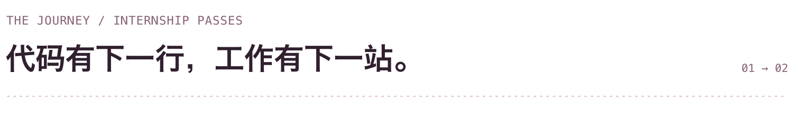
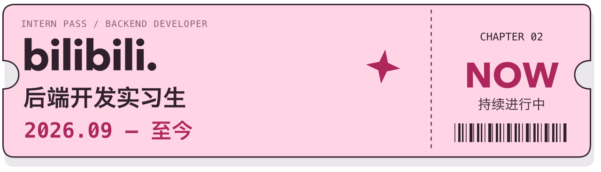
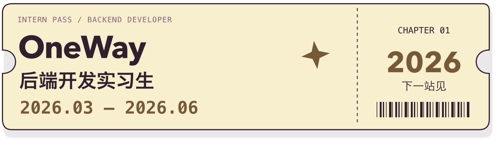
展开实习记录。
哔哩哔哩 / bilibili：后端开发实习生 · 2026 年 9 月至今。
OneWay：后端开发实习生 · 2026 年 3 月至 6 月。
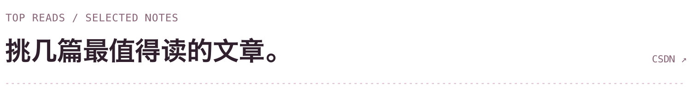